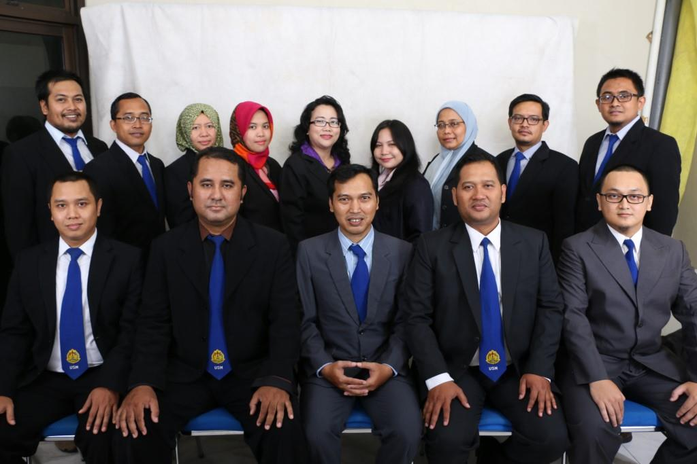

VISI, MISI, DAN PROGRAM
Akreditasi B (SK Dirjen Dikti No. 2255/SK/BAN-PT/Ak-SURV/S/VII/2017, terakreditasi B)
- VISI
- MISI
- PROGRAM
Pada tahun 2022 menjadi Program Studi bereputasi dan berkualitas dalam bidang ilmu Teknik Informatika yang mampu bersaing di tingkat global.
Misi Program Studi S1 Teknik Informatika adalah sebagai berikut :
- Menyelenggarakan pendidikan Teknik Informatika yang berkualitas dengan berdasar pada kebutuhan masyarakat dan perkembangan ilmu pengetahuan dan teknologi informasi, khususnya di rekayasa perangkat lunak, jaringan komputer dan manajemen proyek.
- Melaksanakan kegiatan penelitian yang berkualitas di bidang teknologi informasi khususnya informatika.
- Melaksanakan kegiatan pengabdian kepada masyarakat yang berkualitas di bidang teknologi informasi khususnya informatika.
- Meningkatkan kerjasama secara institusional dengan lembaga yang relevan untuk pengembangan program studi.
Tujuan pendidikan Program Studi S1 Teknik Informatika adalah sebagai berikut :
- Menghasilkan sarjana teknik informatika yang kompeten khususnya di bidang Rekayasa Perangkat Lunak, Jaringan Komputer, dan Manajemen Proyek serta mampu berkompetisi di dunia usaha dan industri.
- Menghasilkan Sarjana yang mampu mengembangkan ilmu pengetahuan dan teknologi melalui penelitian-penelitian yang berkelanjutan.
- Menghasilkan Sarjana yang mampu mengembangkan ilmu pengetahuan dan teknologi melalui penelitian-penelitian yang berkelanjutan.
